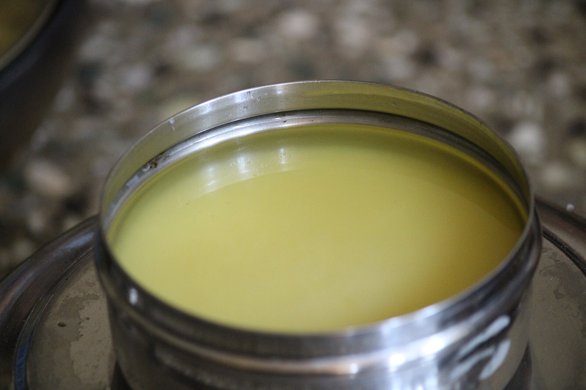
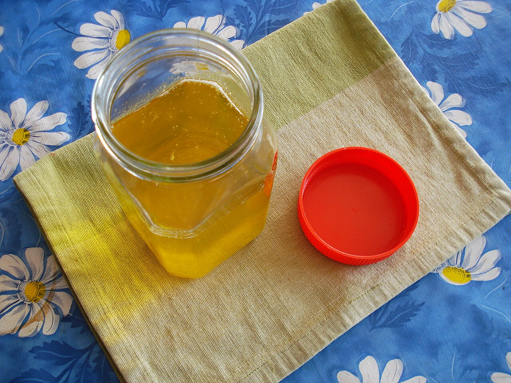

Farm Sourced
Grown in native Tamil Nadu soils: the Cauvery Delta, Jawadhu Hills and Hosur. No synthetic fertilisers, ever.
From the land of Srirangam · Farms of Tamil Nadu
Hand-churned A2 Bilona Ghee from indigenous Kangayam & Gir cows, with ancestral malts, herbal soups and heirloom grains. 100% natural, traceable to every batch.


Our Flagship
The Vedic Bilona Method
Industrial ghee skims cream with centrifuges. Ours begins as whole curd, set overnight in clay pots, the way the Charaka Samhita describes true ghrita.
Morning milk from free-grazing Kangayam & Gir cows, gently boiled.
Cultured overnight in earthen pots. Fermentation pre-digests lactose.
Two-way wooden mathu churning before sunrise, while the air is cool.
Cultured butter is gathered by hand, preserving its delicate lipids.
Heated on low flame until granular, aromatic and deep golden.
The Pantry
No products match your search. Try “malt” or “soup”.
Why Rangaa Roots
Grown in native Tamil Nadu soils: the Cauvery Delta, Jawadhu Hills and Hosur. No synthetic fertilisers, ever.
Rope Bilona churning, wood-pestle oil extraction and stone grinding.
Every jar carries a verified batch ID, farm origin and packed date.
Food-grade glass and recyclable canisters. Zero synthetic preservatives.
Questions about a product? Chat directly with our team on WhatsApp.
Know Your Food
Enter the batch number printed on your pack to see where it was grown, how it was processed and when it was packed.
Try:
Your batch story will appear here.
Loved across South India
Our Story
“My grandparents taught me that real food is medicine, made slowly with patience. I started Rangaa Roots to bring that same slow-made taste and healing wisdom to the world, now proven by science.”
G. Aswin
Founder & Scientific Head · B.Tech Biotechnology, R&D Scientist
From the grandparents' kitchen to the R&D lab: every recipe is validated with modern analytical phytochemistry before it reaches your table.
Have a question about our ghee, malts or grains? Talk to the Rangaa Roots team directly.
Chat on WhatsApp